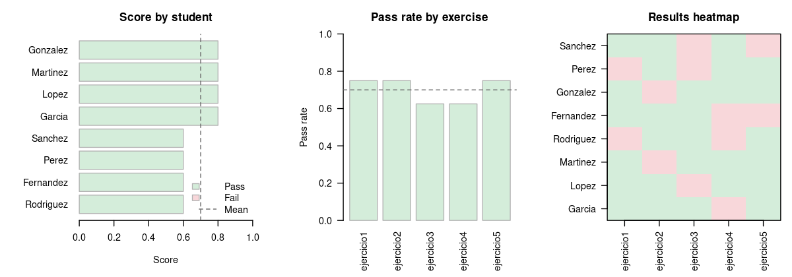

corrector
Source:README.en.md
An R package for automatically grading student coding exercises. Each student submits one R file per exercise; the professor provides matching test files. The package sources both into an isolated environment, runs the tests, and returns a per-test results object.
Guides: Grading pipeline · Cheat-resistant grading · Function reference
Minimal end-to-end example
library(corrector)
# --- 1. Create a fake submission folder ---
dir.create("submissions/garcia", recursive = TRUE)
dir.create("submissions/lopez", recursive = TRUE)
dir.create("tests")
writeLines(
'ceros_cuadratica <- function(a, b, c) {
d <- b^2 - 4*a*c
c((-b - sqrt(d)) / (2*a), (-b + sqrt(d)) / (2*a))
}',
"submissions/garcia/ejercicio1.R"
)
writeLines(
'ceros_cuadratica <- function(a, b, c) c(0, 0)', # wrong
"submissions/lopez/ejercicio1.R"
)
writeLines(
'test_ejercicio1_raices <- function() {
all(ceros_cuadratica(1, 0, -1) == c(-1, 1))
}
test_ejercicio1_tipo <- function() {
is.numeric(ceros_cuadratica(1, 0, -1))
}',
"tests/test_ejercicio1.R"
)
# --- 2. Grade ---
results <- grade_submissions("submissions/", test_dir = "tests/")
results
# <grade_results> 4 rows, 2 students, 1 exercises
# Status:
# pass 3
# fail 1
# --- 3. Summarise and export ---
grade_report(results)
export_to_html(results, "report.html")
export_to_csv(results, "grades.csv")A built-in sample dataset is available to try the package immediately:
results <- example_results() # 8 fake students, 5 exercises
grade_report(results)
plot_report(results)Results shape
grade_submissions() and grade_exercise() return a grade_results object, a long-format data frame with one row per (student, exercise, test):
| student | exercise | test | status | message | duration |
|---|---|---|---|---|---|
| Garcia | ejercicio1 | test_ejercicio1_raices | pass | NA | 0.001 |
| Lopez | ejercicio1 | test_ejercicio1_raices | fail | NA | 0.001 |
status is a factor with levels pass, fail, error, timeout, missing, source_error. This makes it easy to tell a test that returned FALSE apart from one that errored, hit a timeout, or a file the student never submitted.
The legacy wide view (one row per student, one logical column per exercise) is one call away:
as.data.frame(results, format = "wide")
# student ejercicio1
# 1 Garcia TRUE
# 2 Lopez FALSENA means the exercise was missing or failed to parse.
How it works
The grader follows a naming convention:
submissions/
├── garcia_juan/
│ ├── ejercicio1.R <- student file
│ └── ejercicio2.R
└── lopez_maria/
├── ejercicio1.R
└── ejercicio2.R
tests/
├── test_ejercicio1.R <- professor test file (name must match)
└── test_ejercicio2.REach test file contains functions named test_<exercise>_<case> that return TRUE or FALSE:
# tests/test_ejercicio1.R
test_ejercicio1_positivos <- function() {
all(ceros_cuadratica(1, 0, -1) == c(-1, 1))
}
test_ejercicio1_tipo <- function() {
is.numeric(ceros_cuadratica(1, 0, -1))
}The expected exercise list comes from the test directory: every test_*.R file defines an exercise. If a student does not submit an exercise that has a test file, a row with status = missing is recorded rather than silently skipping it.
Student code and test code are sourced into fresh environments for each exercise. Tests do not see base R functions the student redefines (such as all() or ==), except the ones you list in allow_masking. With the default callr engine each exercise runs in its own process, so submissions cannot affect each other.
Tests can also use testthat expectations. A failed expect_* counts as fail, and its message goes in the message column:
# tests/test_ejercicio1.R
library(testthat)
test_ejercicio1_roots <- function() {
expect_equal(ceros_cuadratica(1, 0, -1), c(-1, 1))
}Students can hand in ejercicio1.R, ejercicio1.Rmd or ejercicio1.qmd (for the last two, the R code chunks run). Case does not matter: Ejercicio1.R counts as ejercicio1.
Usage
library(corrector)
# Grade a full batch (directory or .zip)
results <- grade_submissions("submissions/", test_dir = "tests/")
# Grade a single file during development
grade_exercise("submissions/garcia_juan/ejercicio1.R", test_dir = "tests/")
# Console summary
grade_report(results)
# Export
export_to_csv(results, "grades.csv") # wide view by default
export_to_csv(results, "grades-long.csv", format = "long")
export_to_html(results, "report.html") # colour-coded, per-test breakdown
# Export to Google Sheets (requires googlesheets4)
googlesheets4::gs4_auth()
export_to_sheets(results, "https://docs.google.com/spreadsheets/d/...")Partial credit and weights
By default an exercise passes only when all its tests pass. student_scores() gives partial credit (the fraction of tests that pass) and takes weights per test or per exercise. The total column is the grade: a missing exercise counts as 0.
grades <- student_scores(results,
weights = c(test_ejercicio1_roots = 2, ejercicio2 = 3))
grade_report(results, scoring = "partial")grade_scale() turns the score (0 to 1) into a grade. By default it is a 1-10 scale where 60% is a 4; rounding never passes a student who did not reach it:
grades$grade <- grade_scale(grades$total)
grade_scale(grades$total, min = 0, max = 100, pass = 60, pass_at = 0.6)Feedback for each student
export_feedback() writes one Markdown file per student with their grade, the score of each exercise, and the result of each test, with the error message when there is one. The files come in Spanish or English depending on the computer’s language; choose with lang:
export_feedback(results, "feedback/", lang = "en")If you graded with layout = "moodle", export_moodle_feedback() builds a .zip that Moodle loads in one go: on the assignment’s submissions page, use “Upload multiple feedback files in a zip”. The assignment must have file feedback turned on.
export_moodle_feedback(results, "feedback-assignment1.zip")Similar submissions
compare_submissions() compares, exercise by exercise, the files of every pair of students and lists the most similar ones. Renaming variables, changing spacing or adding comments does not hide a copy. A high similarity does not prove copying (short solutions look alike); use it to pick which submissions to read by hand.
compare_submissions("submissions/", min_similarity = 0.8)
#> exercise student_a student_b similarity
#> 1 ejercicio1 Garcia Lopez 1.00Plots
plot_report() produces three sequential plots: student scores ranked, pass rate per exercise, and a pass/fail heatmap.
# Interactive, pauses between plots
plot_report(results)
# Save to PDF
pdf("report.pdf", width = 8, height = 5)
plot_report(results, ask = FALSE)
dev.off()
# Use ggplot2 when installed (falls back to base R otherwise)
plot_report(results, backend = "ggplot2")
Timeout
Each test gets timeout seconds (default 10), and so does loading the student’s file. The default engine, callr, runs each exercise in a fresh subprocess with a temporary working directory. If a test does not respond to the limit (for example inside Sys.sleep()), the subprocess is killed once the whole exercise passes timeout × number of tests + 5 seconds: tests that already finished keep their result, and the rest are marked timeout. To change the limit:
results <- grade_submissions("submissions/", test_dir = "tests/", timeout = 30)Use timeout = Inf for no limit. engine = "inproc" runs tests in the current session: it is faster, but setTimeLimit() does not interrupt every loop, and student code can change your global environment.
For large classes, workers runs several subprocesses at the same time:
results <- grade_submissions("submissions/", test_dir = "tests/", workers = 4)Security
corrector is not a sandbox. The callr engine protects your R session, not your computer: student code can read and write any file your user can, use the network, or run system commands. For code from people you do not trust, run corrector inside a container or virtual machine without your credentials.
Cheating
With the callr and inproc engines corrector blocks the common tricks: redefining base R functions or S3 comparison methods in the file, writing them into the global environment, or calling quit(). A student who knows R in depth can still fool these engines (for example with attach() or by changing the base package). corrector detects such code and notes it in the message column as suspicious code or tampering, and grade_report() lists those students under “Check by hand”.
engine = "isolated" runs the student code in another process and only gets the results back, so those tricks do not change the grade. It takes about twice as long as callr; workers makes up for it:
results <- grade_submissions("submissions/", test_dir = "tests/",
engine = "isolated", workers = 4)engine = "container" does the same inside a Docker container with no network and only the exercise’s files, so student code cannot reach your files or network either. Build the image once from the file the package ships:
docker build -t corrector-runner "$(Rscript -e 'cat(system.file("container", package = "corrector"))')"
results <- grade_submissions("submissions/", test_dir = "tests/",
engine = "container", workers = 4)The article Cheat-resistant grading explains what each engine covers and how to write tests that are hard to fool (for example, compare with identical() and use random inputs).
Example test files
system.file("examples", package = "corrector")Alternatives
- gradethis: grades code inside interactive learnr tutorials. Requires a Shiny server.
- exams: generates randomised exam questions, exports to Moodle, Canvas, PDF and more.
- RTutor: Shiny-based interactive problem sets with automatic solution checking.
corrector is the lightest option: no server, plain .R file submissions, zero hard dependencies.
Folder names
The default extractor takes the first underscore-separated token of the folder name and applies title case (so garcia_juan_12345 becomes Garcia). Pass student_name_fn to override:
results <- grade_submissions(
"submissions/", test_dir = "tests/",
student_name_fn = function(folder) sub("_.*$", "", folder)
)Submissions can also be handed in as a single .zip; the package extracts it into a temporary directory before grading.
Moodle
To grade the .zip from Moodle’s “Download all submissions” directly, use layout = "moodle". It works with and without “Download submissions in folders”, grades only file submissions (online text is skipped), and uses the student’s full name:
results <- grade_submissions("assignment1-submissions.zip", test_dir = "tests/",
layout = "moodle")